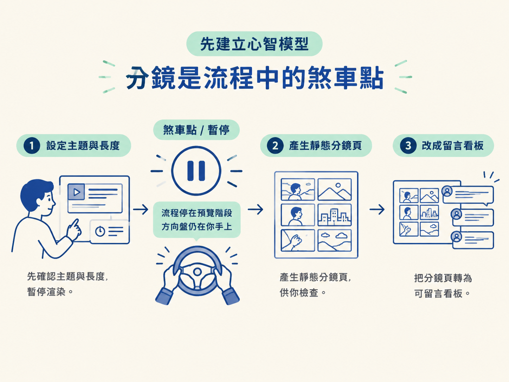
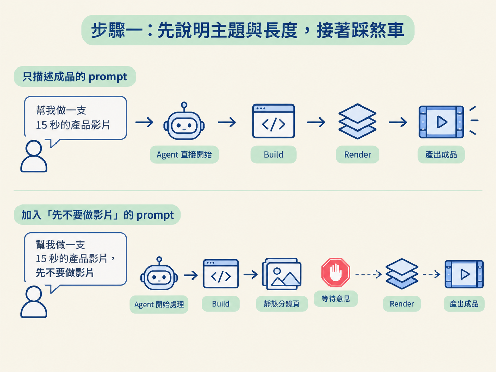
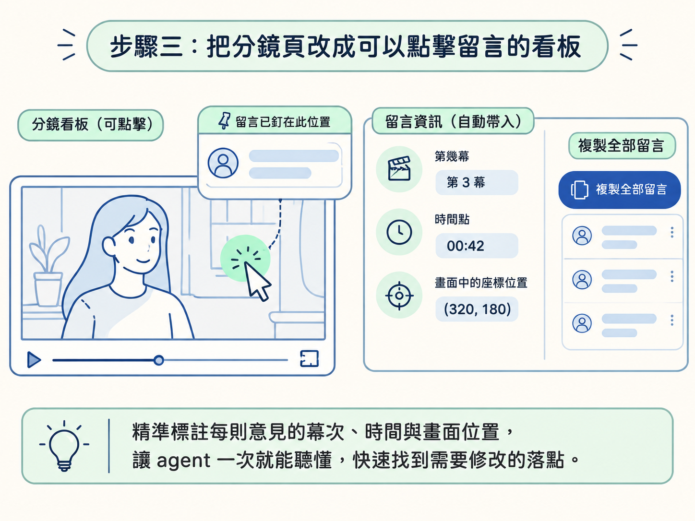

在整條影片製作流程裡，這一步位於「規劃」和「渲染」之間。你要先讓 agent 把每一幕做成可預覽的靜態畫面，等你檢查、留言之後，才進入真正的影片製作。
學完這一課，你會寫出一段能讓 agent「先不要做影片」的分鏡 prompt。它會要求 agent 把每一幕做成最終外觀的 HTML、截圖、依序排在同一頁，並標上開始時間與場景描述；完成後停下來，等你提供意見。
動手前，你需要有一個可以操作的 agent 工作區，對影片的主題與長度有基本想法，也知道分鏡通常要包含哪些欄位。外觀與設計系統則可以沿用你已經定好的版本。
前兩課談過為什麼需要分鏡，以及分鏡應該放哪些資訊。現在真正動手時，最重要的觀念只有一個：在 prompt 裡清楚告訴 agent，現在先不要做影片。
如果你只描述最後想要的成品，例如「幫我做一支 15 秒的產品影片」，agent 很可能會直接把這理解成「開始製作影片」。它會一路往下 build、render，等你看到結果時，已經沒有機會在中途踩煞車。
因此，這一課的流程可以想成三個階段：
最後你拿到的不是完成影片，而是一個停在「預覽」階段的可回饋版本。方向盤還在你手上。

第一句先把影片的範圍講清楚：它要介紹什麼，以及預計有多長。分鏡的內容會依這個範圍展開。例如，你想做一支 15 秒的動態圖像影片，就先明確寫出來。
接著立刻加上關鍵指令：先不要做影片（Don't make the video yet）。這句話不是禮貌用語，它的作用是告訴 agent：目前的工作階段是規劃，不是產出。
先看一個常見、但容易讓流程直接往下跑的版本：
幫我做一支 15 秒的動態圖像影片，介紹我的產品。這句 prompt 本身沒有錯，只是它只描述了成品，沒有指定要停在哪個階段。agent 很可能直接開始 build。

比較穩妥的寫法，是在同一段指令裡同時交代「要做什麼」以及「先停在哪裡」。下面這段可以直接套用，只要把主題換成你的內容：
I want a 15-second motion graphics video about [your topic or product]. Don't make the video yet.
Storyboard it first: build each scene as HTML in the final look, without the animation, and take a
screenshot of each one. Put the screenshots in order on one page, each with its start time and a
short description of what happens in that scene, like "the camera whips to the first panel, then
continues across the panels". Then stop and wait for my comments.這段 prompt 可以拆成幾個明確動作來理解：
prompt 送出後，先不要急著進下一步。花一點時間確認成果是否包含兩個必要條件。
你應該看到每一幕的最終外觀，也應該在旁邊讀到一句說明它將如何動起來的文字，例如「鏡頭甩到第一個面板，接著掃過其他面板」。
如果你拿到的只是沒有內容的畫面空殼，或只有文字、沒有靜態畫面，就要補充要求。分鏡的用途是讓你同時看見「畫面長什麼樣」和「它接下來會怎麼動」。
最基本的做法，是你能在聊天視窗裡指出「第幾幕不對」。但更理想的方式，是直接在畫面上點選位置並留下意見。下一步就會把分鏡頁改成這樣的互動看板。
如果 agent 沒有停下來，而是直接開始做影片，不必慌張。重新提醒它：「先不要 render，先把每一幕的靜態畫面整理成分鏡給我。」通常只是暫停指令不夠明確，或 agent 沒有正確理解。
確認分鏡頁完成後，再送出第二段 prompt，請 agent 把它改造成「可以留言的看板」。這次要加入兩個功能：
Make the storyboard page one I can comment on.
When I click a spot on a frame, pin a comment
there. Each comment keeps the shot, its time and
the spot I clicked. Add a Copy all comments
button that copies every comment as one list I
can paste back to you.這段指令的關鍵是 keeps the shot, its time and the spot I clicked。它要求每一則留言自動記錄三件事：
如此一來，留言就不會只剩下一句模糊的「這裡不對」。agent 會知道你指的是哪一幕、哪個時間，以及畫面中的哪個位置，後續修改才有明確的落點。

不同工具的複雜度不一樣。遇到很複雜的影片時，一個裝有對應 skill 的 agent 甚至可能主動建議先做分鏡，而不是直接開始製作。它知道先規劃通常比直接動手更划算；但如果它沒有主動提出，你就要在 prompt 中自己踩下這個煞車。
完成前面幾步後，你手上應該有一份可以直接打開的分鏡頁，內容包括：
最重要的是，影片此時還沒有被 render。流程應該停在預覽階段，等你檢查畫面、指出問題，再決定是否往下製作。
分鏡 prompt 的核心，是明確踩下煞車：先講清楚主題與長度，再要求「先不要做影片」。接著要求 agent 把每一幕用最終外觀做成 HTML、截圖、依序排在同一頁，並附上開始時間與短描述。送出後，確認成果同時具備靜態畫面與動態描述，以及可以提供回饋的管道。最後，再用另一段 prompt 把看板改成可點擊留言、可「複製全部留言」的頁面。整個流程應該停在預覽，尚未 render。
現在你應該已經有一頁可以點擊、可以留言的分鏡。下一步要處理的是留言本身：怎麼寫，才能讓 agent 一次聽懂，而且只修改你指定的地方？接下來會拆解一則好留言的三個元素，並看它如何被一次複製、一次貼回。